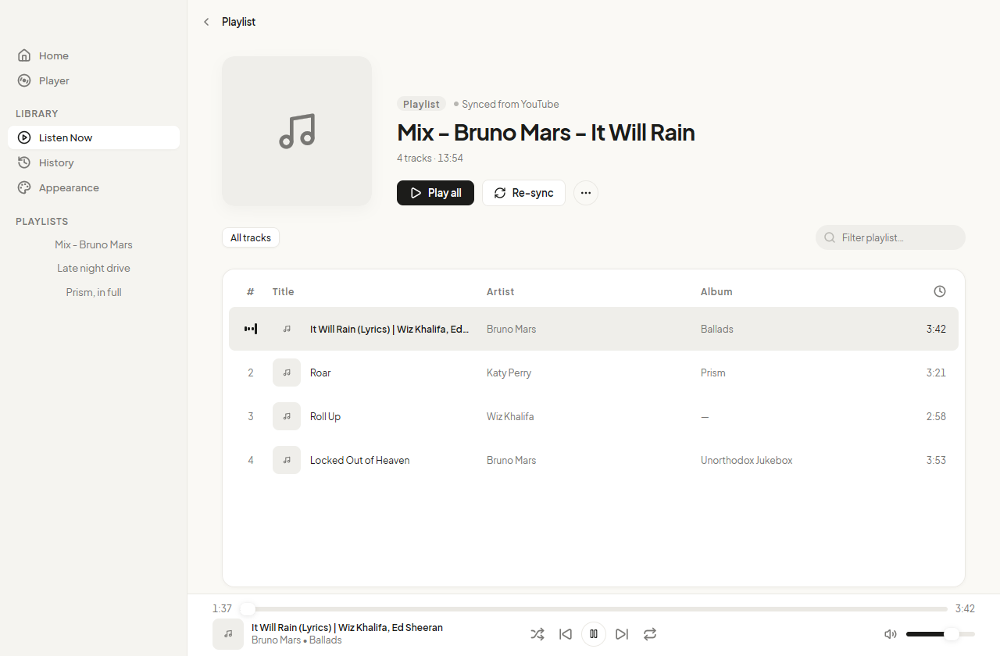
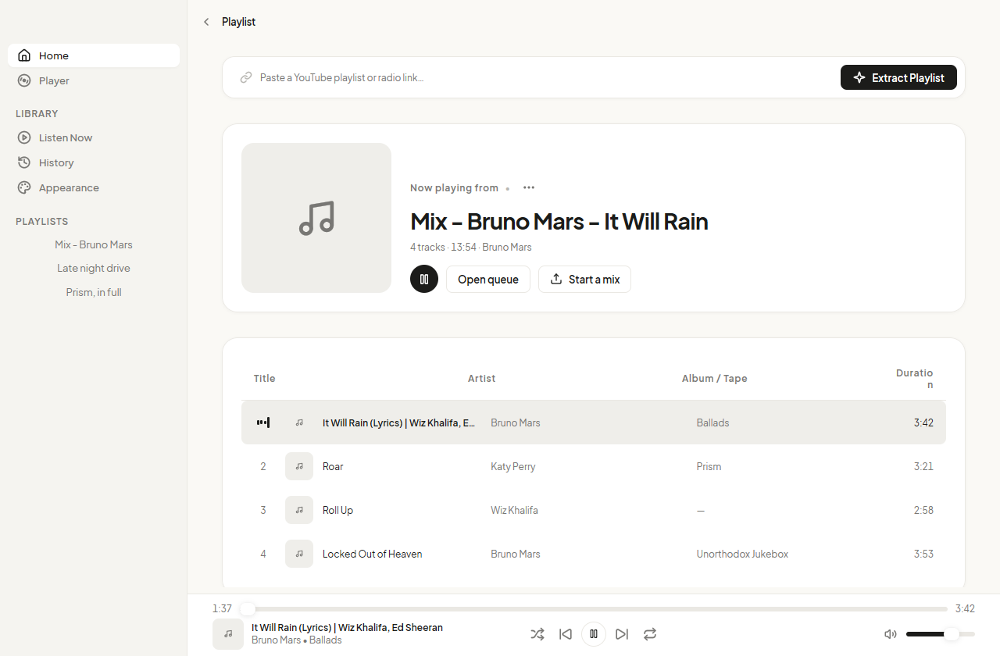
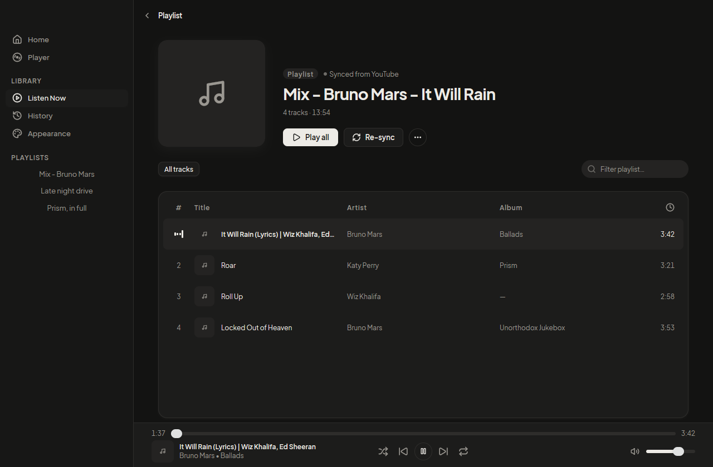
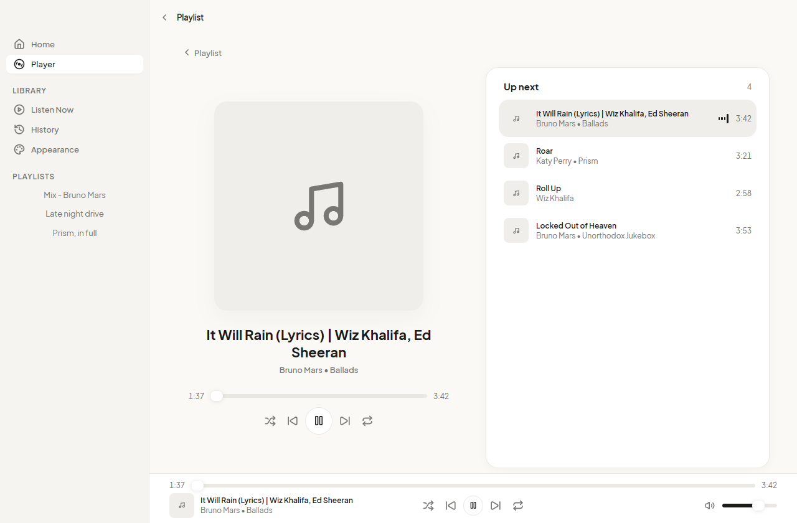
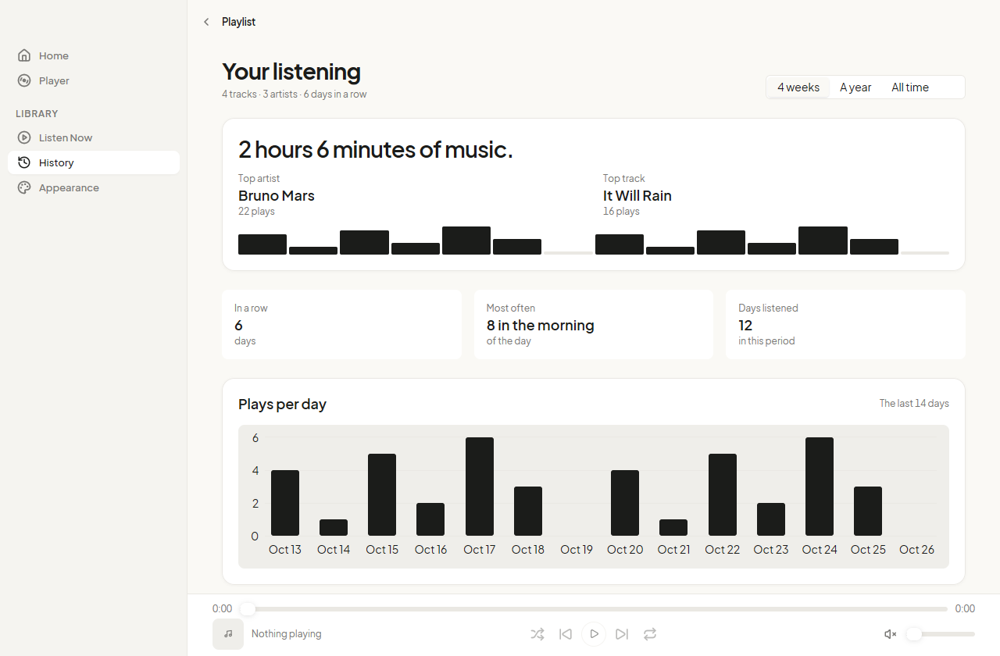
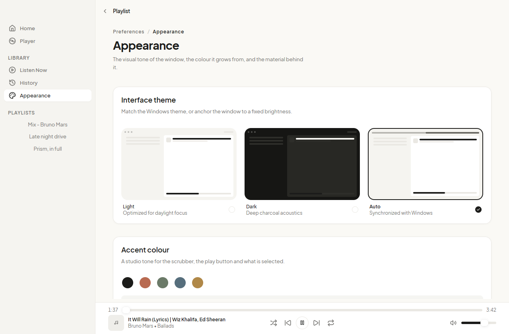

It picks up where you stopped
The playlist, the track and the second are written to disk as you listen. Reopening the app lands you in the same place, not at the top of the queue.
A player, not a tab
YouTube playlists and the mixes built from a track, in a window of their own. No browser tab, no advertisements, no account.
Version 0.7.0 12.6 MB Windows, macOS, Linux No account

One window. One list. One big play button.
Three steps, once
Any YouTube playlist or mix. The app reads the title, the artist, the album and the length of every track before it plays a note.
yt-dlp resolves the stream and ffmpeg decodes it. The video never loads, so a playlist costs a fraction of the bandwidth of a tab.
Close the window and the music keeps playing from the notification area. Quit, and the next run opens the same track at the same second.
What you get
The playlist, the track and the second are written to disk as you listen. Reopening the app lands you in the same place, not at the top of the queue.
Ten playlists are kept on disk with their tracks, artists and lengths. Opening one again is instant, even on a train with no signal.
When a connection breaks mid song, the app finds the stream again and carries on from the same place, instead of skipping the track or stopping.
Light, dark, or whatever the desktop is set to. An accent, a tint taken from the cover of the track that plays, and a Mica backdrop on Windows 11.
The whole app
The field takes a link and becomes Play. The playlist arrives with its cover, its name, how many tracks and how long, and a table you can filter by title, artist or album as you type.

Every track, with its artist, its album and its length. The row that plays says so with four moving bars rather than a colour you have to learn.

Cover, name, artist and album at the size they deserve, a seek bar you can drag, and the queue beside it so you always know what follows. Start a mix here when the list runs out.

Plays per day for the last two weeks, the artist and the track you played most, the hour you listen at, and how many days in a row. It fills in as you listen, and never leaves the machine.

The accent colours the play button, the seek bar and what is selected. Leave it alone and the app takes the tone from the cover of the track that is playing, so the window changes colour with the music.
Before you download
Yes, two programs have to be on your PATH: yt-dlp, which resolves the audio of a track, and ffmpeg, which decodes the stream into sound. The app names whichever one is missing rather than failing quietly. The playlist data itself needs neither.
No. It asks for the audio stream and decodes only that, so the video is never fetched and never written to disk. Nothing is kept after a track ends: what stays on disk is the playlist data, not the music.
No. The app reads playlists from InnerTube, the interface YouTube's own clients use, without signing in. It also means your subscriptions and your history are not part of what it knows.
Yes. Closing the window puts the app in the notification area, where its menu can play, pause and skip, and where a click brings the window back. The media keys on your keyboard work from any application. Quitting from that menu is the only way to stop it.
Partly, and the app is honest about which part. A playlist you have already opened loads from disk with no network at all, so you can read the list on a plane. Playing a track still needs a connection, because the audio is streamed rather than saved.
The release builds four: a Windows installer, a macOS app for Apple silicon and one for Intel, and a Linux package. Windows gets the most attention, because it is the desktop the app is used on daily, so the Mica backdrop and the installer are Windows first.
The installer is 4.1 MB and there is nothing to configure. If yt-dlp and ffmpeg are already on your machine, the first playlist plays in about a second.
Download for WindowsVersion 0.7.0. macOS and Linux builds are on the same release page.
